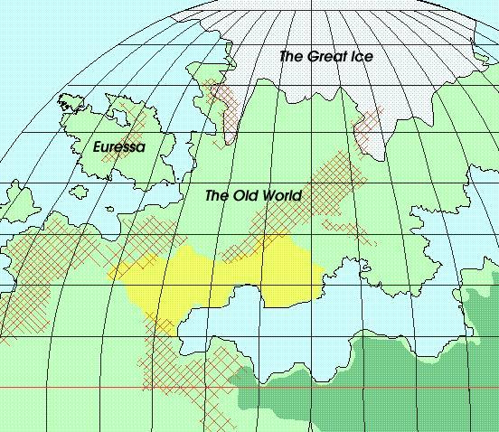

|
Contents
|
Regional Information
Mythologies
Campaigns
Legends and Lore
|
|
|
What is Habisfern?
|
|
The Habisfern Scrolls are the principle historical
documents for the Kingdom of Rorn, in Weidany. They
are similar to the real-world Anglo-Saxon Chronicles,
and were the first part of the campaign to be written.
|
|
|
Related Topics
|
Yags.
A game system written specifically with the Habisfern campaign
in mind.
The Land of Kythe.
My previous game world.
|
|
|
To the north-west of the Old World lays the isle of
Euressa, which was protected from the devastation wrought
by the Ice by the gods of humanity. These pages detail this
isle, and the people who live there.

|